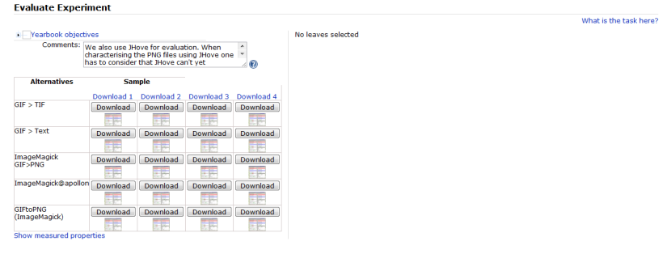
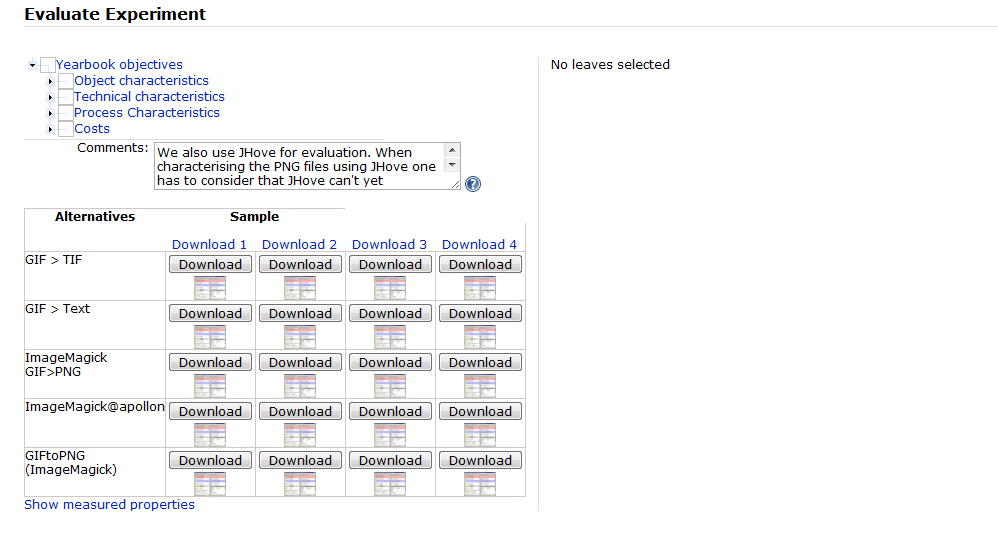
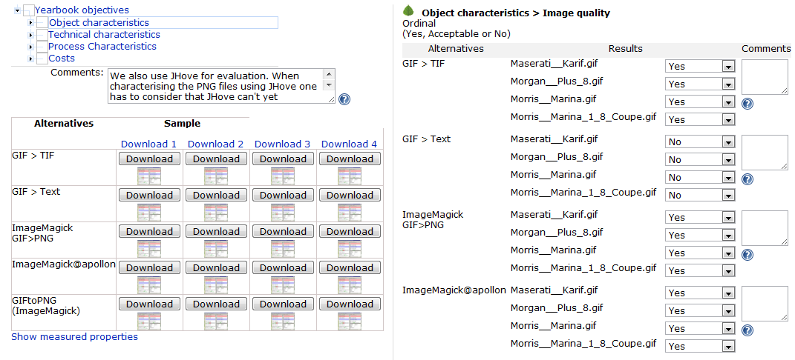

This page explains what to do in the evaluation step.
The initial view of this page provides you with
- an objective tree on the upper left,
- a matrix of sample objects and experiment results on the lower left,
- and an empty space saying "No leaves selected" on the top right,

The task of this page is to provide all evaluation values for every criterion that you have defined in the tree.
This means both experimental outcomes judging migration quality or the performance of an emulator, as well certain characteristics of the tool, the process, etc...
Some of these evaluation values might be provided by automated measurement tools; we are working on increasing the percentage of these.
However, currently you still have to enter many of them manually.
The tree on the top left provides a way of selecting areas in the tree to filter the list of leaves. If you click on the root, the right side will disaply all leaves;
if you select a certain branch, it will display all leaf criteria in this branch.
You can expand the tree on the top left to get the screen below:
Now selecting a node will display all leaf criteria under this node and prompt you for evaluation values.

To support the evaluation, you have full access to the original sample objects and the results that were created during the experiments - either uploaded by yourself or generated by preservation actions.
You can download the original samples on the top of the table and each result file in the corresponding cell of the matrix.
You can further get visual support for judging the quality of migration actions by comparing the charateristics of input and output files extracted by Jhove.
Clicking on the matrix in the lower left will bring up a screen that shows the characteristics of original and converted objects side by side, as shown below.
For reasons of traceability and auditing, Plato checks that each evaluation field has actually been entered. So you have to either manually specify a value for each field or confirm the evaluation data by clicking Approve all values before you can proceed to the next step.